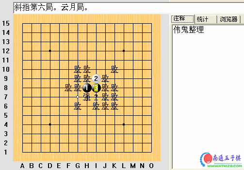

伟鬼整理的云月局
首页
定式及研究
#1 伟鬼整理的云月局 作者：有志青年 发表时间：2006-8-11 8:59:13

点击下载
 云月全局.rar
云月全局.rar
#2 Re:伟鬼整理的云月局 作者：ntren 发表时间：2006-8-11 22:53:09

#3 Re:伟鬼整理的云月局 作者：幽若 发表时间：2006-8-11 23:39:13
云月没得防
#4 Re:伟鬼整理的云月局 作者：娅娅 发表时间：2006-8-12 1:16:16
呵呵
#5 Re:伟鬼整理的云月局 作者：潇洒 发表时间：2006-8-12 9:08:46
看看
#6 Re:伟鬼整理的云月局 作者：江风 发表时间：2006-8-12 11:59:16

#7 Re:伟鬼整理的云月局 作者：无尘 发表时间：2006-8-12 12:05:04
好.
#8 Re:伟鬼整理的云月局 作者：zhsok0 发表时间：2006-8-18 17:10:58
看看看000
#9 Re:伟鬼整理的云月局 作者：zhsok0 发表时间：2006-8-18 17:11:43
看看看000
#10 Re:伟鬼整理的云月局 作者：KOFLEO 发表时间：2006-8-23 16:44:57
kan
●成交凭证：购买者 KOFLEO 已付出10金币！（乙联）
●成交凭证：购买者 KOFLEO 已付出10金币！（乙联）
#11 Re:伟鬼整理的云月局 作者：news 发表时间：2006-8-25 14:22:36
支持下。
楼主和作者都辛苦了！
●成交凭证：购买者 news 已付出10金币！（乙联）
#12 Re:伟鬼整理的云月局 作者：头文字D 发表时间：2006-10-11 20:45:54
看看
●成交凭证：购买者 头文字D 已付出10金币！（乙联）
●成交凭证：购买者 头文字D 已付出10金币！（乙联）
#13 Re:伟鬼整理的云月局 作者：破网的蜘蛛 发表时间：2006-10-19 11:55:56
顶一下
●成交凭证：购买者 破网的蜘蛛 已付出10金币！（乙联）
#14 Re:伟鬼整理的云月局 作者：nara 发表时间：2006-10-29 16:07:30
hao
#15 Re:伟鬼整理的云月局 作者：天涯游子 发表时间：2006-11-3 13:23:57
这个没有研究过
#16 Re:伟鬼整理的云月局 作者：幽戏 发表时间：2006-11-12 16:22:26
seesee
#17 Re:伟鬼整理的云月局 作者：cjh199 发表时间：2006-11-13 20:36:59
xuexi
#18 Re:伟鬼整理的云月局 作者：小桂子2 发表时间：2006-11-19 1:20:19
好
#19 Re:伟鬼整理的云月局 作者：潍县秀才 发表时间：2007-1-9 16:14:07
我也要
#20 Re:伟鬼整理的云月局 作者：艾危 发表时间：2007-1-23 3:16:31
回帖回帖
#21 Re:伟鬼整理的云月局 作者：吕文鹏 发表时间：2008-3-20 10:11:28
怎么买
#22 Re:伟鬼整理的云月局 作者：五子天下 发表时间：2008-3-20 12:12:18
看不到~郁闷~
#23 Re:伟鬼整理的云月局 作者：梅花虎 发表时间：2008-4-20 0:26:13
下载了，怎么才能看到啊？
#24 Re:Re:伟鬼整理的云月局 作者：小丸.net 发表时间：2008-4-20 12:40:50
引用：
原文由 梅花虎 发表于 2008-4-20 0:26:13 :
下载了，怎么才能看到啊？
再去下载一个爱五子棋打谱软件 点这里下载
#25 Re:伟鬼整理的云月局 作者：糖醋小排 发表时间：2008-5-3 19:33:09
云月局哦
#26 Re:伟鬼整理的云月局 作者：执五子之手8 发表时间：2008-5-15 22:06:25
大哥的谱很全面好看!!辛苦了,谢谢!!!